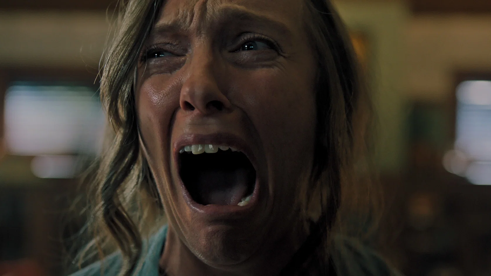
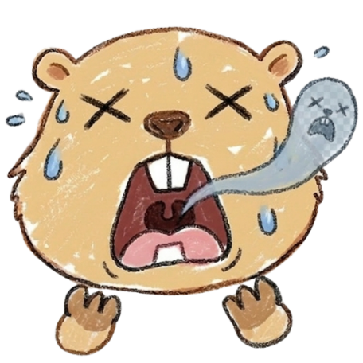

Hereditary
この映画の怖さはいくつかの要素が組み合わさっています。それぞれを事前に知っておくことで、心の準備ができます。
動物は登場しますが、直接メインではありません。ただし不快な描写があるため、動物描写に敏感な方は少し注意してください。
これを知っておけば少し楽に観られます。タイムスタンプ付きで危険ポイントをご案内。

【ラスト】母アニーは完全に精神崩壊し、自ら首を切断するという強烈なラストへ。一家はカルト教団の儀式に利用されており、最終的に息子ピーターに悪魔"パイモン"が宿る。
【真相】祖母エレンは最初から悪魔降臨の儀式を進めていた。家族の悲劇は偶然ではなく、ほぼ仕組まれていたもの。「呪われた家族の崩壊」ではなく、"最初から逃げられなかった話"。
【生存情報】実質的にまともな形で救われる人物はほぼいない。
【後味】かなり悪い。救いはほぼなく、「全部決まっていた」という絶望感が残る。観終わったあと静かな部屋が嫌になるタイプ。
| タイトル | ヘレディタリー／継承（Hereditary） |
|---|---|
| 公開年 | 2018年 |
| 監督 | アリ・アスター |
| 主演 | トニ・コレット |
| 制作国 | アメリカ |
| 上映時間 | 127分 |